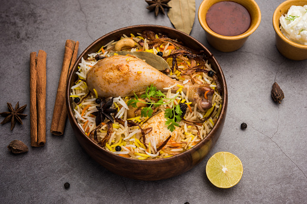
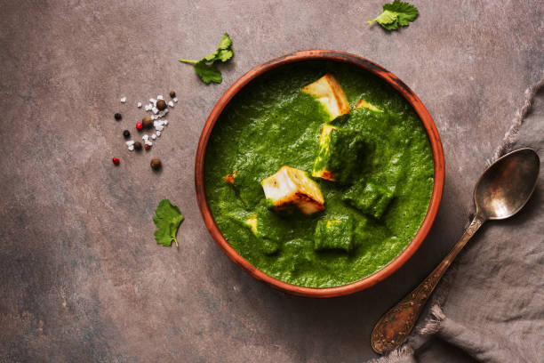

"Food is not just about sustenance, it's a celebration of flavor, culture, and tradition. Whether you're cooking for yourself,
your family, or your friends, a well-crafted recipe can transport you to new culinary heights.
So let's roll up our sleeves, chop some vegetables, and create some delicious memories together."
-- Indian Cuisine --
Your Search Results:

Biryani
Chicken Biryani Recipe
Ingredients:
2 cups basmati rice
1 lb. boneless chicken, cut into small pieces
1 large onion, sliced
2 tbsp. vegetable oil
1 tbsp. ghee
1/2 cup plain yogurt
2 tsp. ginger paste
2 tsp. garlic paste
1 tsp. red chili powder
1 tsp. cumin powder
1 tsp. coriander powder
1/4 tsp. turmeric powder
1/4 tsp. garam masala powder
2 bay leaves
2 cinnamon sticks
4 green cardamom pods
4 cloves
2 cups water
Salt to taste
Instructions:
Wash the rice in cold water and soak it for 30 minutes.
Heat the oil and ghee in a large pot or Dutch oven over medium heat. Add the onion and fry until golden brown. Remove half of the onions and set aside for garnish.
Add the chicken to the pot and cook until browned on all sides.
Add the yogurt, ginger paste, garlic paste, red chili powder, cumin powder, coriander powder, turmeric powder, garam masala powder, bay leaves, cinnamon sticks, green cardamom pods, cloves, and salt to taste. Cook for 2-3 minutes.
Drain the rice and add it to the pot. Stir to coat the rice with the spices.
Add the water and stir gently. Bring to a boil, then cover the pot with a tight-fitting lid and reduce the heat to low. Cook for 15-20 minutes, or until the rice is tender and the liquid has been absorbed.
Remove the pot from heat and let it rest for 5-10 minutes.
Fluff the rice with a fork and transfer it to a serving dish. Garnish with the reserved fried onions and serve hot.

Palak Paneer
Palak Paneer Recipe
Ingredients:
1 pound paneer, cut into cubes
2 tablespoons oil
1 onion, chopped
2 cloves garlic, minced
1 tablespoon grated ginger
1 teaspoon ground cumin
1 teaspoon ground coriander
1/2 teaspoon ground turmeric
1/4 teaspoon cayenne pepper
1 can (14.5 ounces) diced tomatoes, drained
1/2 cup heavy cream
1/2 teaspoon salt
1 pound fresh spinach, trimmed and washed
Instructions:
Heat the oil in a large skillet over medium heat. Add the paneer and fry until golden brown on all sides. Remove from the skillet and set aside.
Add the onion, garlic, and ginger to the same skillet and sauté until the onion is translucent.
Add the cumin, coriander, turmeric, and cayenne pepper to the skillet and cook for 1 minute.
Add the diced tomatoes and their juices to the skillet and stir to combine. Cook for 5 minutes.
Add the heavy cream and salt to the skillet and stir to combine. Cook for 2-3 minutes.
Add the spinach to the skillet and stir to combine. Cook until the spinach has wilted.
Return the paneer to the skillet and stir to combine. Cook for 1-2 minutes.